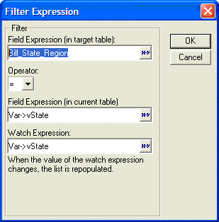
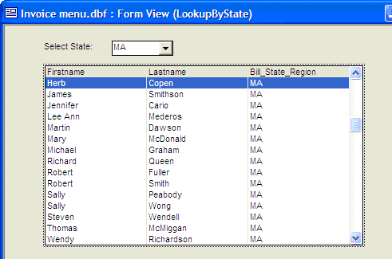
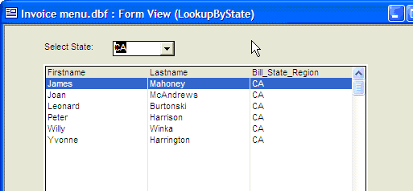

Auto-Populating List Box and Combo Box Controls
When you place a list box or combo box control on a Form, Alpha Five offers several different ways to automatically populate the control. The controls can be automatically populated with various internal Alpha Five lists or dynamic lists of data.
The following is a sampling of the lists that Alpha Five can automatically generate.
Fields in a table
Layouts (like Forms, Reports, etc.) in the current database
Saved Operations (like Export, Copy, Append) in the current database
Tables or Sets in the current database
Scripts in the current database
Images in the current database
You can generate a dynamic list of data using an expression that returns a CR-LF delimited list of values. There are two ways to do this:
Modify the choices properties of a list box, combo box, or tree control
Use a record-list list box or combo box based a table or set
For example, the filter expression that controls the records that are shown in a Record List-List Box control on a form can be based on a variable or other field on the form. as the value in that variable changes (specified in the Watch Expression ), the records shown in the Record List are updated.
The following screen show the user interface for applying a filter to a Record List-List box whose contents is based on a variable called vState.

Here is the form showing the Record List, with data showing customers in MA:

Here is the form showing the Record List, with data showing customers in CA:

See Also
Overview of Development Approaches